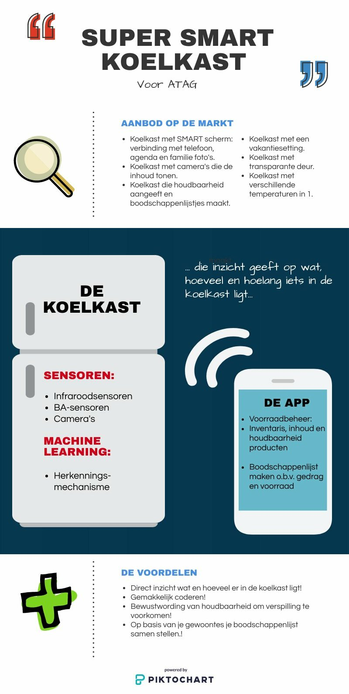
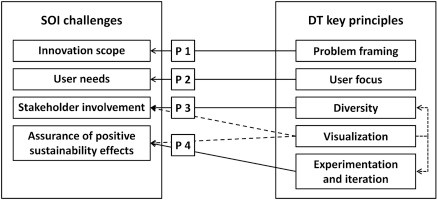
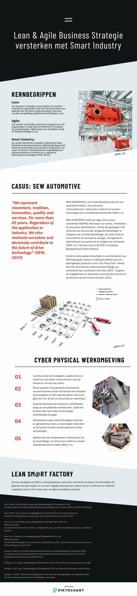
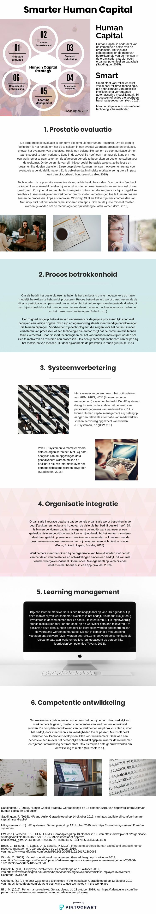

Smart Start
SMART INDUSTRY & BEDRIJFSKUNDE
Weekopdracht W1: Een blogpost over de koppeling tussen Smart Industry en Bedrijfskunde.
Mijn naam is Miranda en ik volg de opleiding bedrijfskunde. Binnen de opleiding ben ik vooral geïnteresseerd in het strategisch vlak en HRM. Om mijn kennisbank te verbreden heb ik gekozen voor de minor Smart Industry. In deze blog bespreek ik de koppeling tussen Smart Industry en bedrijfskunde.
Bedrijfskunde
De Hogeschool van Arnhem en Nijmegen waar ik de studie bedrijfskunde volg definieert de studie als volgt: ‘Bedrijfskunde gaat om veranderingen. Je leert organisaties te verbeteren en processen te vernieuwen’ (HAN, z.d.). Hierbij kijk je naar zowel personele, financiële, logistieke en juridische aspecten binnen de organisatie en ligt er een grote focus op managementvaardigheden.Smart Industry
Smart Industry is gericht op de revolutie die plaats vind in de industrie en bij bedrijven. Smart Industry gaat om het verzamelen en gebruiken van internet gebaseerde informatie en communicatie technologieën. Met als doel processen en value chains efficiënter, flexibeler, persoonlijker en kortom beter te maken (Haverkort & Zimmerman, 2017). Wanneer je het hebt over Smart Industry kom je veelal de volgende zaken tegen: - Gedecentraliseerde monitoring via internet en besturingsalgoritmen ter verbetering van het product en het productieproces; - Machine-learning algoritmen en big data analyses voor het verbeteren van industriële processen en onderhoud te voorspellen; - Adaptieve productietechnieken om materiele diversiteit voor de klant te realiseren; - En het gebruik van Internet of Thing waarbij apparaten met elkaar kunnen communiceren ter behoeve van verschillende doeleinden (Haverkort & Zimmerman, 2017).De koppeling
De koppeling tussen bedrijfskunde en Smart Industry is makkelijk te vinden en van groot belang. Bedrijfskunde is gericht op het verbeteren en vernieuwen van processen binnen de bedrijfsomgeving. Nu de bedrijfsomgeving verandert naar Industrie 4.0 zal de bedrijfskundige organisaties moeten gaan helpen in de weg daar naar toe. Smart Industry is op vrijwel elk vakgebied bruikbaar en als bedrijfskundige zeer bruikbare kennis voor toekomstige adviezen en opdrachten.Haverkort, B. & Zimmerman, A. (2017). Smart Industry: How ICT will change the game! Geraadpleegd op 8 september 2019, van https://ieeexplore.ieee.org/stamp/stamp.jsp?tp=&arnumber=7839872
Hogeschool van Arnhem en Nijmegen. (z.d.). Bedrijfskunde. Geraadpleegd op 8 september 2019, van https://www.han.nl/opleidingen/hbo/bedrijfskunde/voltijd/#
SMART RESEARCH FLOW
Voorbereiding W2: Een weergave van mijn Research Flow met Smart in het achterhoofd.
Mijn (Smart) Research Flow bestaat uit 5 stappen, namelijk (onderstaande). Daarnaast maak ik gebruik van het programma Trello (een echte aanrader) tijdens mijn projecten. Dit is een online scrumbord waar je je werkzaamheden en drive bestanden in één online “agenda” kunt bewaren. Dit online scrumbord geeft de vrijheid om in onderstaande stappen mijn onderzoek te door lopen. Maar ook de vrijheid om regelmatig af te wijken van mijn plannen en een stap terug te nemen, om het ‘overall’ beeld te krijgen en hierop te kunnen inspelen. De stand-ups binnen het proces richt ik zelf gewoonlijk in als een discussie moment met een stakeholder.
Mijn Research Flow
- De probleemanalyse;- Het onderzoeksontwerp;
- De dataverzameling;
- De data-analyse;
- En de rapportage.
Probleemanalyse
Veelal krijg je vanuit de opdrachtgever een probleem, een vraag of een verzoek aangeboden. Waarvan zij willen dat je mee aan de slag gaat. Als bedrijfskundige heb je hier de taak om het werkelijke probleem in kaart te brengen, het probleem af te bakenen en te verhelderen. Dit gaat veelal gepaard met veel vragen stellen en een kritische bril op te zetten.Onderzoeksontwerp
- Binnen het onderzoeksontwerp kijk ik naar de onderzoeksvraag die beantwoord moet worden;- Welke methoden daarvoor gebruikt kunnen worden;
- De tijd en middelen die nodig zijn, en of dat het onderzoek haalbaar is;
- De stakeholders tot betrekking van het onderzoek;
- En de instrumenten die gebruikt kunnen worden.
Data-analyse
Vervolgens analyseer ik de data. Dit doe ik door al mijn data in Google Drive te bewaren en online aantekeningen te nemen. Hierbij kijk ik naar de bruikbaarheid, validiteit en betrouwbaarheid van de bronnen.Rapportage
In de rapportage wordt het gelopen onderzoek beschreven. Hierin wordt beschreven: wat er is onderzocht, welke methoden er zijn gebruikt, welke conclusie en aanbevelingen er gedaan kunnen worden, wat andere onderzoeksmogelijkheden zijn en of er nog discussiepunten zijn.SMART KOELKAST
Weekopdracht W2: Infographic "Een cadeau aan ATAG".
Ik en Luuk Bindels hebben gekeken naar wat ATAG aanbiedt op gebied van smart keukenapparatuur, maar ook naar wat concurrenten aanbieden. We hebben geconstateerd dat veel apparatuur via ATAG's app tot een mate bestuurd kan worden. Zoals je bij de koelkast de temperaturen aan kunt passen. Wij werden direct benieuwd naar wat er nog meer mogelijk is bij een koelkast in combinatie met de al bestaande app.
Onze bevindingen en het idee is in de onderstaande InfoGraphic geïllustreerd. Het idee is een slimme koelkast voorzien van verschillende sensoren: Infraroodsensoren, BA-sensoren en camera’s. De infraroodsensoren geven inzicht in hoe vol verpakkingen zijn, BA-sensoren geven inzicht op de houdbaarheid van producten en de camera’s geven inzicht op welke producten zich in de koelkast bevinden. Het herkennen van producten kan gerealiseerd worden doormiddel van machine learning.
Voordelen van dit idee in het kort zijn: tijdsbesparing, toegankelijk, gebruiksvriendelijk en tegen voedselverspilling.

DESIGN THINKING
Voorbereiding W3: De theorie op een methode die ik veelal spelende wijs toepas.
Bevindingen artikel Baldassare
Het creëren van waarde gaat om meer dan enkel waarde toevoegen voor de klant. Het gaat om waarde creëren voor zowel de klant, de maatschappij en andere stakeholders (aandeelhouders, leveranciers en partners). Hierbij is het belangrijk dat er een overlap is tussen duurzaamheid, economische waarde en enige co-creatie: ‘user driven innovation’ genoemd.Door middel van een iteratieve onderzoekswijze (zoals design thinking) tussen product en klant kan de gewenste toegevoegde waarde achterhaald worden. We spreken hier over het achterhalen van de gaps tussen de klant en de organisatie (markt). Een middel dat hiervoor gebruikt kan worden is de customer journey.
Er zijn 3 stappen voor het ontwerpen van een nieuw product: talking, thinking en testing.
Talking: is het ontdekken van overeenkomsten, gaps en problemen tussen de klant en de opdrachtgever. Zoals hier voor is benoemd.
Thinking: is het reframen van problemen, het verzamelen van kennis en brainstormen over nieuwe ideeën.
Testing: is het definiëren van de verwachting van de klant, het testen van prototypen en het evalueren van de resultaten.
Bevindingen “Beyond Design Thinking” video
Design Thinking word bespreven als: het begrijpen van het mensen hun leven en het identificeren van problemen die mensen ervaren. Hierbij is het belangrijk om meerdere oplossingen voor hetzelfde probleem te ontwerpen en te testen.De stappen in de design thinking bestaan uit:
1. Mensen hun leven begrijpen;
2. Indentificeren van de gaps en probleem definiëren;
3. Oplossingen bedenken;
4. Oplossingen uittesten door middel van prototypen en evalueren.
Bevindingen eigen research
“Design thinking is an essential tool for simplifying and humanizing. It can’t be extra; it needs to be a core competence” (Kolko, 2015). Deze quote geeft aan dat er een koppeling hoort te zijn tussen een bedrijfsstrategie en de klantervaring (en de gap hierin).Uitdagingen bij design thinking zijn:
1. Het accepteren van meer dubbelzinnigheid;
2. Het omarmen van risico’s;
3. Het weghalen van verwachtingen (Kolko, 2015).
Onderstaande afbeelding geeft de koppeling tussen duurzame innovaties (SOI) en design thinking (DT) weer, als een samenvatting van de eerder benoemde bevindingen.
 (Blazejewski et al., 2019)
Baldassarre, B., Calabretta, G., Bocken, N., & Jaskiewicz, T. (2017). Bridging sustainable business model innovation and user-driven innovation: A process for sustainable value proposition design.Delft: Journal of Cleaner Production.
Blazejewski, S., Buhl, A., Harrach, C., Muster, V. (2019). Design thinking for sustainability: why eand how design thinking can foster sustainability oriented innovation development. Journal of Clearner production 231. 1248-1257.
Kolko, J. (2015). Design Thinking Comes of Age. Harvard Business Review: September 2015
Network, B. H. A. (Regisseur). (2018). Beyond Design Thinking[Film].
LEAN & AGILE + SMART
Weekopdracht W4: Smart Factory bij Sew.

BLOCKCHAIN MANAGEMENT
Voorbereiding W5: Blokken bouwen op de lijn.
(2 oktober 2019) Afgelopen week was ik aanwezig bij een evenement van verzekeringsmaatschappij Prima voor Elkaar en teelt en handelsbedrijf Betuwe Plant. Deze avond was georganiseerd ter ere van samenwerking met toeleveranciers. De quote “alleen ga je snel en samen kom je verder” werd veelal benoemd. Deze avond heeft mij opnieuw laten zien hoe belangrijk het netwerk is waarbinnen en waarmee je opereert en heeft me benieuwd gemaakt welke kansen er liggen op het gebied van Supply Chain Management en Smart Industry.
Supply Chain
Supply Management volgens Stock & Boyer (2009) is het managen van een netwerk relaties binnen de organisatie en tussen afhankelijke organisaties en bedrijfseenheden bestaande uit materiaalleveranciers, inkoop, productiefaciliteiten, logistiek, marketing en gerelateerde systemen. Die waarde toevoegen aan het product van producent tot aan de klant. Het managen van al deze netwerkrelaties is complex: je hebt te maken met meerdere personen en entiteiten, wellicht meerdere locaties, veel administratie en veel transporttrajecten (Van der Schaaf, z.d.). Mogelijk is dat de reden, dat wanneer je simpelweg ‘googled’ naar Supply Chain, je de term Blockchain geregeld voorbij ziet komen.Blockchain
Bitcoins is een van de meest bekende voorbeelden betreft Blockchain. Tot op heden wordt Blockchain het meest prominent gebruikt in de wereld van cryptocurrency. Blockchain is een tool om ‘veilig’ samen te werken. Het is een gedeelde boekhouding, waar iedereen inzage op heeft op dezelfde informatie, maar niemand de informatie kan veranderen (Huls, 2017).Transparantie
Een consensus-algoritme zorgt ervoor dat elke nieuwe transactie die aan de blockchain wordt toegevoegd door alle deelnemende partijen wordt goedgekeurd. Dit zorgt voor een hogere mate van transparantie over gegevens. Gegevens zoals: orders, productie statussen, track&trace gegevens etc. De informatie is dus voor elk deelnemend lid inzichtelijk en up-to-date (Reitsma, 2019).Authenticiteit
Het uitvoeren van transacties op Blockchains gebeurt met het gebruik van geheime sleutels. En het inzien van transacties met publieke sleutels. De transactie wordt hierbij ‘geblocked’ en kan hierna niet meer gewijzigd worden. Dit maakt dat transacties meer fraude bestendig kunnen worden gemaakt. Een voorbeeld hiervan is het afstempelen van een binnen gekomen order, wanneer de transactie door de ontvanger is afgestempeld kan er niet meer terug gekrabbeld worden. Naast fraudebestendig maakt de Blockchain de transacties gemakkelijk controleerbaar en bespaart het een hoop papier (Reitsma, 2019). Had ik zeker nog niet genoemd? Dit alles gebeurt digitaal.Internet of Agreements
De Blockchains kunnen in een digitaal programma worden vastgelegd. Die ontvangt van aangesloten programma’s de resultaten die vastgelegd moeten worden. Deze programma’s worden Smart Contracts genoemd. Deze Smart Contracts maken het mogelijk om regels en condities te verbinden aan transacties. Dit biedt een mogelijkheid tot vervanging van juridische contracten naar zelf-uitvoerende Smart Contracts in een Blockchain (Reitsma, 2019).Blokken bouwen op de lijn
Op zijn kortst gezegd is Blockchain management een tool om de samenwerking met netwerkrelaties transparanter, veiliger en efficiënter te maken. Een Blockchain als Supply Chain of binnen een Supply Chain biedt dus kansen. Echter vraagt het wel om grote investeringen, een platform aan partijen die mee willen werken en staat het begrip Blockchain binnen het bedrijfsleven nog op kinderschoenen (Reitsma, 2019). Ik ben benieuwd wat alle mogelijkheden zijn van Blockchains als Supply Chain of binnen de Supply chain. Zie jij na het lezen van bovenstaand kansen en ideeën bij het gebruik van Blockchains binnen de Supply Chain, dan hoor ik hier graag meer over! Want hé, alleen ga je snel, maar samen kom je verder 😊.Huls, C. (2017). Rabobank: Wat is Blockchain? Geraadpleegd op 2 oktober 2019, van https://www.youtube.com/watch?v=eIfmrRprGc8 Reitsma, P. (2019). Blockchain in logistiek en supply chains – Waar liggen de mogelijkheden? Geraadpleegd op 2 oktober 2019, van https://www.crypto-index.nl/blockchain-in-logistiek-en-supply-chains/ Stock, J. and Boyer, S. (2009). Developing a Consensus Definition of Supply Chain Management: A Qualitative Study. International Journal of Physical Distribution & Logistics Management, 39, 690-711. Van der Schaaf, A. (z.d.). Hoe Blockchain de supply chain zal transformeren. Geraadpleegd op 2 oktober 2019, van https://coulant.nl/logistiek/hoe-blockchain-de-supply-chain-zal-transformeren/
SMART SUPPLY CHAIN
Weekopdracht W5: Inspiratie Smarter Supply Chain o.b.v. fruitteelt casus.
'Video-infographic: Smarter Supply Chain' toont een InfoGraphic gevult met inspiratie voor het slimmer maken van de Supply Chain. De mogelijkheden zijn hierin eindeloos, vandaar dat er is gefocust naar de chain van een 'appeltaart' als casusonderwerp.
SMARTER HUMAN CAPITAL
Weekopdracht W6: Inspiratie InfoGraphic voor een Smarter Human Capital.
